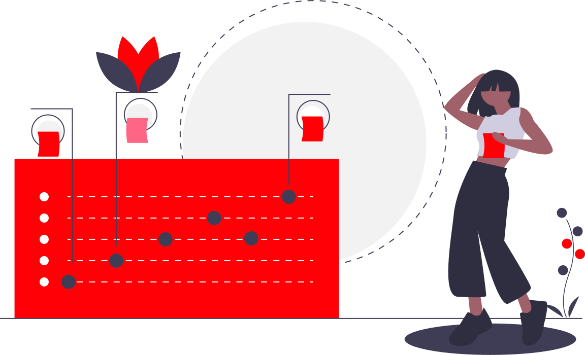
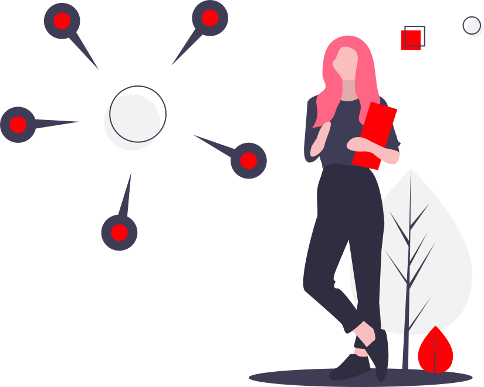
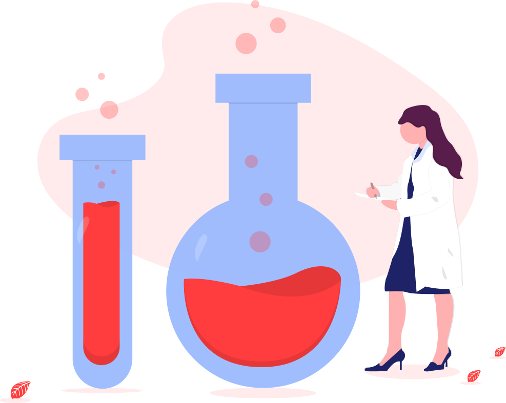

<ion-content>
  <ion-slides [options]="slideOptsOne" pager="true">

    <ion-slide >
      <ion-card class="card1">
        
        
        <ion-card-header>
          <ion-card-title class="title1 animate__animated animate__backInLeft animate__delay-2s">Welcome, Students</ion-card-title>
        </ion-card-header>
        <ion-card-content class="content1">
          At present there are 118 known chemical elements. About 20 percent of them do not exist in nature and are known only because they have been synthetically prepared in the laboratory.
        </ion-card-content>
        
        
    </ion-card>
    </ion-slide>

  

    <ion-slide>
      <ion-card class="card2">
      
      <h2>Learn uninterrupted on the go... Detailed information as precise as it can be.</h2>
      
      <ion-button class="continue" shape="round" fill="solid" (click)="finish()">Start learning <ion-icon slot="end" name="arrow-forward"></ion-icon></ion-button>
      
    </ion-card>
    </ion-slide>

  </ion-slides>
</ion-content>


